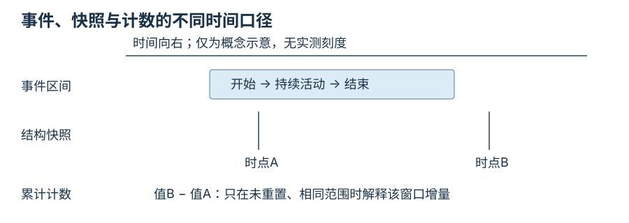

第八篇 · 可观测性、故障分析与性能实践
第33章 Java 虚拟机的可观测性与诊断接口
诊断从可区分的假设开始。相同的线程、类与内存活动，放进日志、事件、计数器和快照后，会留下不同的信息，也会引入不同的成本。
本章以 Java 开发工具包（Java Development Kit，JDK）25.0.5.0.2、Java 虚拟机（Java Virtual Machine，JVM）的 OpenJDK HotSpot 实现为基线，提交1775ea114f64；本机为macOS AArch64。源码阅读 · 运行说明 · 证据索引。
33.1 统一日志
33.1.1 标签、级别和装饰器共同定义一条记录
统一日志按标签集合选择输出，级别控制详细程度，装饰器补充uptime、level、tags和tid等定位信息。class+load表示同时具有这两个标签的集合；带星号的选择覆盖包含给定标签的更多集合。不能把加号当成“两个标签各记一份”。先用目标运行时的-Xlog:help查可用集合，再用问题决定范围。[S01]
加载异常先找来源和定义时序；执行形态改变联结编译／去优化证据；暂停拆开回收与安全点。统一时间基准才能关联，进程uptime与日历时间不能直接相减。线程标识也有Java与操作系统两个层次，应保留字段来源而非仅比较数值。
33.1.2 输出和轮转也是证据条件
本章用文件输出，显式uptime、级别、标签与线程信息，并限制两份、每份约1兆字节的轮转配置。轮转减少磁盘风险，也意味着较早的线索可能已被覆盖；“当前文件没有”只能约束仍保留的区间。发生故障后再打开详细日志，无法恢复此前没有生成的记录。
VM.log允许运行时调整，但配置成功不证明目标标签在窗口内产生了事件。LogConfiguration::parse_log_arguments先解析选择和装饰器，再进入configure_output；失败命令与有效配置需要分别留存。本轮只把目标的gc级别改为info，没有打开全标签trace或测量日志开销。
33.2 诊断命令、转储与内存统计
33.2.1 先问对象和范围，再选命令
jcmd把命令送到指定目标；目标help是能力清单，而本机工具版本并不能替代目标版本。Thread.print便于看平台线程和锁等待，堆转储保留对象图，类直方图只按类型汇总。本地内存跟踪（Native Memory Tracking，NMT）解释虚拟机分类的保留与提交，不是整个进程的所有本地分配账本。
本章实际取得线程转储、NMT与PerfData计数，同时保留堆转储／直方图的目标帮助。没有为了“工具齐全”额外转储堆；第35章用小目标实际采集直方图，并说明它请求回收的干扰。需要对象持有路径时，直方图不足，应选择合适时间的对象图及支配分析。

33.2.2 事件、计数和快照回答不同时间问题
快照回答某个采集时点是什么结构；累计计数回答其定义区间共发生多少；带开始时间和持续时间的事件才能解释某段等待。两次快照相同不证明中间没有变化，两个累计值之差也要排除重置和作用域变化。高影响命令可能停顿目标、触发回收或产生大量输出，应先读help中的影响说明。
把一个转储里的RUNNABLE直接写成“长期占满处理器”是不成立的。需要连续线程／系统数据与采样栈；同样，保留空间不等于实际驻留，提交空间不等于对象存活。图33-3把采集点与事件区间画在同一时间轴，强调“没看到”的时间空白。
33.3 工具接口、插桩与附加
33.3.1 三个职责层次
Java虚拟机工具接口（Java Virtual Machine Tool Interface，JVMTI）面向本地代理的能力与回调；Instrumentation向Java代理提供类变换、大小估计等服务；Attach负责连接目标并请求启动代理或诊断服务。它们可能合作，但连接成功不意味着获得全部事件能力，也不意味着所有类都允许改变。[S02]
本例用-javaagent启动，清单声明重转换与重定义能力；代理在premain注册Transformer。它没有动态加载代理，因此输出不能证明运行时Attach加载代理已获准。动态代理加载的目标选项、版本告警与权限需单独核查；也不要把用于jcmd的诊断附加和代理加载混成一个授权开关。

33.3.2 工具代码进入目标进程后也成为负载
回调通常处于目标操作的执行路径，代理可能分配对象、加载类或持有锁。对所有类打印完整字节既扰动时序，又会放大输出。本章仅匹配ObservedValue一个固定类，记录阶段和输入长度；其余类返回null，避免无关转换。
首轮附加被执行沙箱阻止，应用仍完成三次方法结果输出；第二轮在获准权限下取得目标help和快照。两份运行单独保留。这说明观测通道不可用与业务进程不能运行是不同问题，失败的jcmd不能算空转储或零线程。
33.4 类变换与重定义
33.4.1 时机和输入来源决定怎样组合变换
加载时变换处理定义类之前的字节。重转换针对已加载类重新经过规则：输入从初始类文件表示出发，不要求常量池字节顺序完全相同；不可重转换Transformer的既有输出按契约重用，可重转换的Transformer会再次调用。重定义则由调用者提供替换类文件，随后也参与变换链。两者不能理解成永远对上次输出继续打补丁。[S02]
CH33-E01通过正式类文件接口把original常量变成load；再分别把replacement设为retransform、redefine。真实输出依次为这三个字符串，三次回调输入长度均为414字节。长度相等只描述本例，不证明字节等同；新版本常量池的布局细节不应成为工具逻辑的依赖。

33.4.2 改变方法体仍须满足类结构和依赖规则
标准重定义／重转换不允许任意增加字段、改变继承或随意增删方法；方法体变化仍须通过字节码验证，并受可修改类与能力条件限制。已有活动栈帧可能继续执行旧方法，新调用使用新定义，不能把应用程序编程接口（Application Programming Interface，API）返回当成所有旧帧瞬间替换。本例没有活动中的value帧，也没有尝试不合法结构变化。
锁定实现VM_RedefineClasses::doit在安装版本的过程中刷新相关编译依赖，flush_dependent_code负责使依赖旧假设的代码失效。这把工具操作与第18章恢复机制连起来：观测方法本身可以改变代码状态。本轮只确认返回值变化，未测代理开销或逐帧去优化时序。
33.5 观测方法的开销与偏差
33.5.1 成本随频率、内容和保存策略变化
统计采样用有限样本近似热点，方法插桩在选中调用边界增加工作，持续日志按选中路径输出，结构转储在采集点汇总大量状态。没有一种方法在所有问题上成本最低；先让证据能够区分假设，再缩窄范围、阈值和窗口。只比较文件大小并不能比较观测价值。
第34章首次方法追踪区间约38.7毫秒，而同一次自定义请求区间只有2.75毫秒，显示探针边界和首次基础设施初始化也在记录中。它不是“业务有35毫秒额外锁等待”的证据；先核对栈、方法边界和配置，再解释时间。

33.5.2 未记录只约束启用且成功保存的观测范围
采样间隔可能漏掉短热点，阈值会隐藏短等待，栈深度限制截断调用上下文，缓冲或磁盘丢失会留下缺口。没有样本既可能表示活动少，也可能是事件未启用、窗口不重叠或不支持。检查事件设置与元数据应在检查热点之前。
观察者效应不只增加固定延时，还可能改变编译时机、锁竞争和回收节奏。对照必须保留相同观测配置；若为了定位打开更重的插桩，应把它和性能测量分开。本书的机制教学与短程序不是生产开销保证。
33.6 JDK 25 的兼容性变化
33.6.1 旧计数器不再是原来的时间口径
25版移除PerfData周期采样和sun.os.hrt.ticks；Serial／Parallel的部分堆使用计数在回收后更新，Eden使用可能一直显示零。它不证明应用没有分配。旧sun.rt._sync*监视器计数也移除，可按问题转向相应飞行记录事件，但并非每个旧计数都有一对一替代。[S03]
迁移监控时应核对字段是否存在、单位、更新时点与区间，再修正展示和告警。本轮PerfCounter.print保留了目标实际内容；未搭建监控系统，也没有用另一个版本的计数名称补齐缺项。
33.6.2 传统线程转储与包含虚拟线程的转储互补
本轮Thread.print -l中没有命名的observed-virtual业务线程，而Thread.dump_to_file的JavaScript对象表示法（JavaScript Object Notation，JSON）输出包含该线程及休眠栈。由此不能认为前者证明线程不存在，也不能假设后者拥有前者全部锁和死锁诊断信息。[S01]
虚拟线程、载体、平台线程与本地线程标识不是同一对象。需要看业务任务用包含虚拟线程的转储，需要看载体或传统锁关系则补充相应命令。25版部分锁信息增强仍须以目标帮助和实际内容为准；第35章的环形等待来自平台线程和可拥有同步器，不外推为全部虚拟线程死锁可被同样检测。
观察与边界
实际运行、配置、第一轮附加失败与后续成功均在evidence/runs。三次方法结果是语义变化的直接观察；输出长度、计数和快照仅支持各自口径。第34章继续把不同证据放回同一业务区间。
回顾与思考
- 为什么零Eden计数不等于零分配？
- 重转换为什么不能无条件把上次结果当成输入？
- 看到虚拟线程业务等待而载体空闲时，应补充哪类证据？
来源与实现入口
- S01：25版jcmd文档及目标help；日志解析与配置见锁定logConfiguration.cpp。
- S02：Instrumentation契约；InstrumentationImpl及jvmtiRedefineClasses的符号、行号与摘要见实现阅读。
- S03：25版发布说明中PerfData及监视器计数变化；初始发布说明与本轮更新版实际输出分别核对。